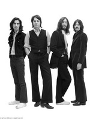
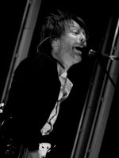
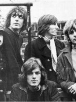

After 11 years in financial markets, I got bored and decided to study at Le Wagon. My misson: to learn Rails.
See for yourself|  |
The BeatlesHumanity finds a impossibly good, obviously alien band buried beneath Liverpool and, with the intelligent computer Paul McCartney, sets off on a quest. |
|  |
RadioheadMonsieur Thom Yorke comes to a beachside hotel for a vacation, where he accidentally (but good-naturedly) causes epilepsy on random people passing by. |
|  |
Pink FloydThe commercial guitar player David Gilmour receives a distress call from Roger Waters. After searching for survivors, the band heads home only to realize that a deadly bioform has joined them. |
This page has been coded during the FullStack program @LeWagon. That was probably the best experience of my entire life.